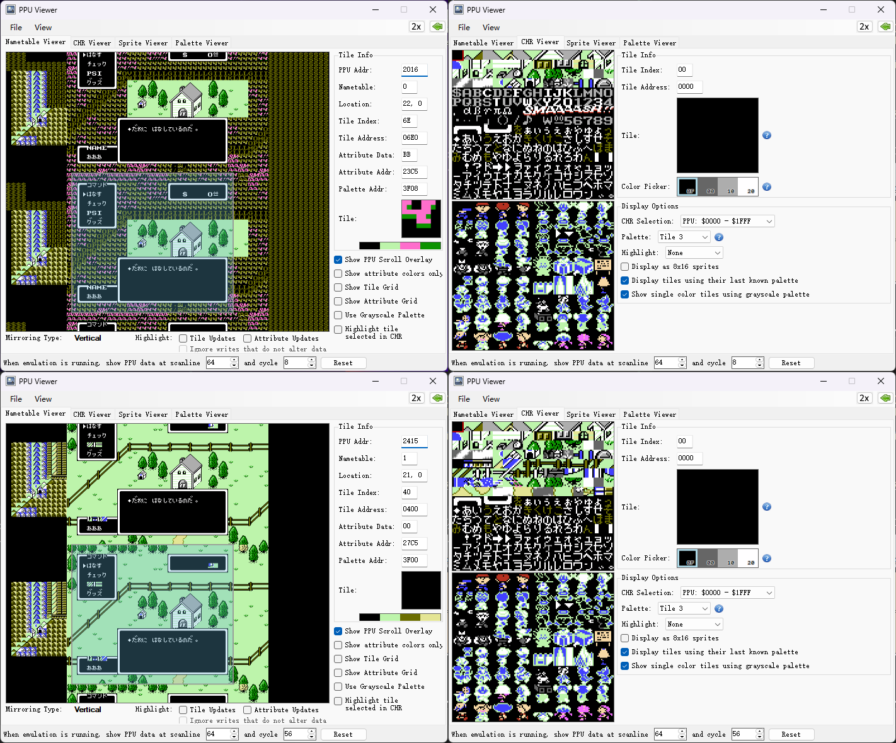

这可能是FC游戏《地球冒险》难以汉化的原因
周三 11 一月 2023FC游戏《地球冒险》是红白机上的知名作品。作为一个RPG，它有大量的文字。这样的游戏理应出现汉化版，毕竟中文游戏圈已经做了这么多年汉化了。但是事实上就是没有弄出来。我作为一个红白机开发技术上的萌新，尝试一下从技术上分析，这个游戏的汉化难度。
《地球冒险》的一些基本信息：它是个日版游戏，标题名称为“Mother”。没有出过官方英文版，但是有爱好者改制的英化版。从Mapper的角度看，它是一个Mapper4游戏，使用了MMC3芯片。
MMC3支持IRQ中断，它可以对扫描线进行计数，可以在PPU绘制第N条扫描线时，触发IRQ中断。在IRQ中断执行代码中，我们可以更改PPU绘制时依赖的各种数据。这意味着，我们可以实现屏幕分区域的绘制。比如在第N条扫描线时，改变图样表（Pattern Table）对CHR-ROM的映射。然后在第M条扫描线时，把图样表改回来。这样就能跨段（Bank）绘制更多的CHR（在背景中）。
下面我们来看《地球冒险》中战斗画面的一帧：
我们对画面绘制过程进行分解，来看IRQ如何改变图样表实现屏幕分区域的绘制的：
图片太大，如果看不清，请在图片上右键“在新标签中打开图片”然后放大观看。
用的是Mesen模拟器的PPU调试功能，它的好处是不仅能定位扫描线（scanline），还可以定位PPU时钟周期（cycle），这样我们就可以了解到一段IRQ中断代码在多少个PPU周期被执行完毕。
一共截取了10个片段，下面逐一解释：
这里要注意的是Mesen的Nametable Viewer，并不是用来显示扫描线在屏幕会绘像素点的实时结果的。 它给出的就是可视化的PPU数据，大多数模拟器的调试功能都会这么做。
- 一开始的情况，这和上一帧结束情况是一样的。
- 当绘制扫描线1和运行到第340个PPU时钟循环时（下面用
S1C340这样的形式表示），PPU的第一个图样表被切到CHR-ROM中敌人的相关段。 - 第3到第6个截取时刻（从S2C40到S2C130），我们能看到图样表1已经被切得只剩敌人的相关段了。之所以全部切掉，我猜是因为后面有尺寸更大的敌人，比如BOSS。而程序都是一套。
- 从第6个截取时刻，也就是S78C323一直往后，我们能看到图样表1在逐步切回文字界面的相关段。这样PPU又能绘制文字界面了。
于是，就实现了屏幕分区域的绘制。
高级一点的，比如《闪闪亮亮星星之夜DX》。这张动图里的天空和地面就是采用屏幕分区域绘制的视差卷动效果。
PPU在一般情况下，绘制一个像素，计为一个PPU时钟周期。在NTSC电视制式下，三次PPU时钟周期的时间，对应一次CPU时钟周期。
虽然红白机的屏幕像素是256x240点阵的，但是并不是每一个像素都计为一个PPU时钟周期。电视机电子束在进入下一条扫描线前（水平过扫描），在256个像素之外，还有84个额外的PPU时钟周期（可能不止84个，我也不确定，萌新了喂）。
详细资料请参阅：NESDev Wiki - PPU渲染
CPU时钟周期又是什么呢？ 简单来说，比如
LDA #$01的执行需要2个CPU时钟周期。 这和这段汇编的对应机器码0xA9 0x01是2个字节有关。 详细资料请参阅：NESDev Wiki - 时钟周期参考小抄
已经讲了这么多，那么《地球冒险》的汉化难度到底在哪里呢？
我们来看一个游戏前期户外场景下，打开菜单界面的一帧：
看那个PSI选项，它的字模所在的CHR-ROM段，与哪些日文字模不在一起。我们用Mesen模拟器的调试功能查看一下这个PSI绘制的前后过程：

我们看到，在S64C8时，英文字模已经切到图样表1里了。这时PSI已经可以正常被PPU绘制了。
而到了S64C56，图样表1中英文字模的段又被切回了场景的图样。
这特么是在一条扫描线完成的！也就是说《地球冒险》不是以扫描线划分屏幕去切换对CHR-ROM的映射的。
不管原始开发者这样做是不是很牛X，这给汉化《地球冒险》带来了困难。
相对于英文、日文假名来说，中文字模尺寸庞大，无法在很短的PPU周期中做到切换。例子中PSI后面只有24个像素，也就是原始开发者在24个PPU时钟周期（8个CPU时钟周期）里完成了场景图样的切回工作。这对于中文是不可能的任务。除非说是菜单项这种，与大段文字不共用相同的图样地址空间，用非编码的方式。一帧里要显示大段的中文，对于红白机十分有限的图样表来说，仅通过切换CHR-ROM的段映射，是无法完成的。
那么有没有办法完成这个任务？还是有的。我们查看那些中文RPG文字卡，就会发现它们实际上基本都带有CHR-RAM。
有了CHR-RAM，我们可以将中文字模放在PRG-ROM中，并且压缩起来（一个图样像素可以有4个值，所以字模可以叠加）。然后在NMI中断中，将下一帧需要的中文都腾挪到CHR-RAM上。最后PPU显示画面时，把图样表对CHR-RAM做映射切换即可。
比如《重装机兵》的D商汉化版。它是Mapper74的，也算是MMC3的Mapper（仿制芯片），能发出IRQ。它还用了74LS138和74LS139芯片，将1KiB的CHR-ROM的段8和段9，重定向到2KiB的CHR-RAM上。
是的，用74芯片也可以做出Mapper来。不知道能不能用通用逻辑芯片实现IRQ中断。
比如《重装机兵》里对话的这一帧画面，我们能看到：
在S145C0时，PPU的图样表映射的内容，已经能够满足显示中文的需要。并且，只根据需要用到的文字，组织了CHR-RAM里的字模。
处于共用的目的，ROM中（可能是PRG-ROM，也可能是CHR-ROM）里的字模图样肯定不是按照对话文字这样排列。 这里点选了“Display as 8x16 sprites”，这样《重装机兵》里的字模才容易被看出来。
当然，《重装机兵》没有像《地球冒险》一样，定位到PPU时钟循环去改变图样表映射。它的对话框直接完全覆盖了下半部分的游戏画面。
好了，说到这里，大致已经讲清了《地球冒险》的汉化难度。应该不是不可能，只是难度极高。游戏扩容时要加入CHR-RAM的支持，要选择合适的Mapper方案。模拟器也不一定能支持得好（看下图）。如果我们想把汉化后的游戏放进N8烧录卡，或者做一张MMC3实体卡带，达到运行无误也是有难度的。
作为一个萌新，可能难免有所失误，希望得到指教。